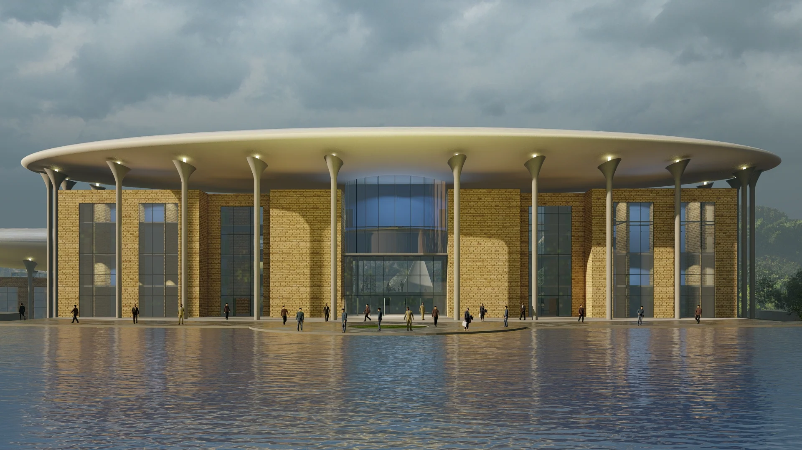
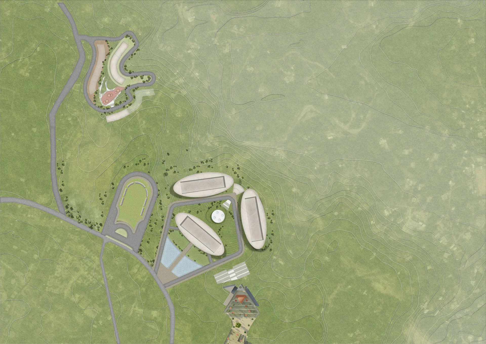
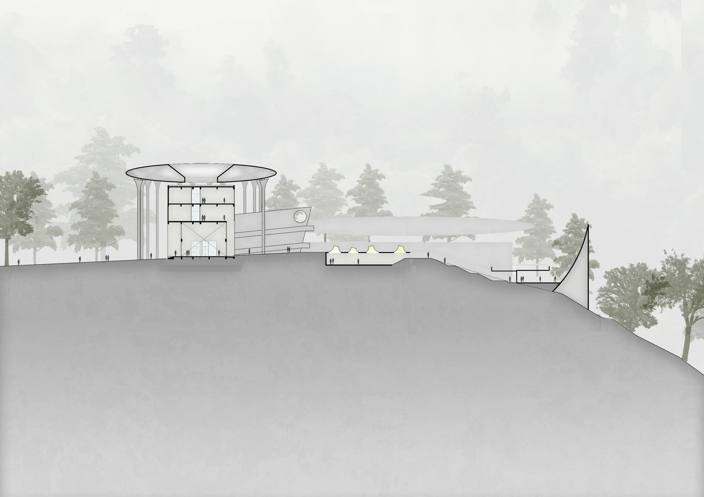
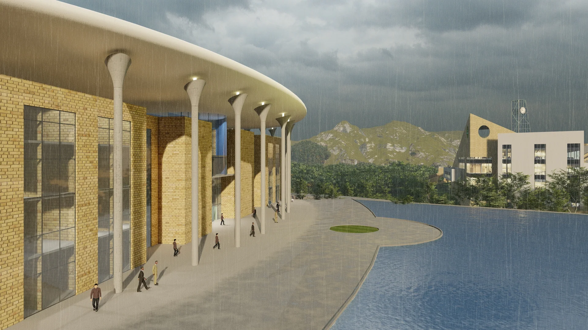
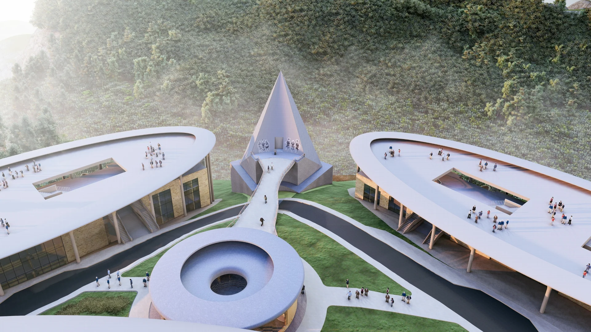
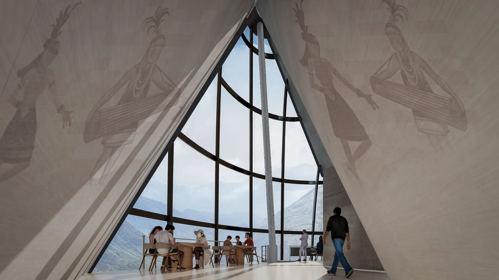
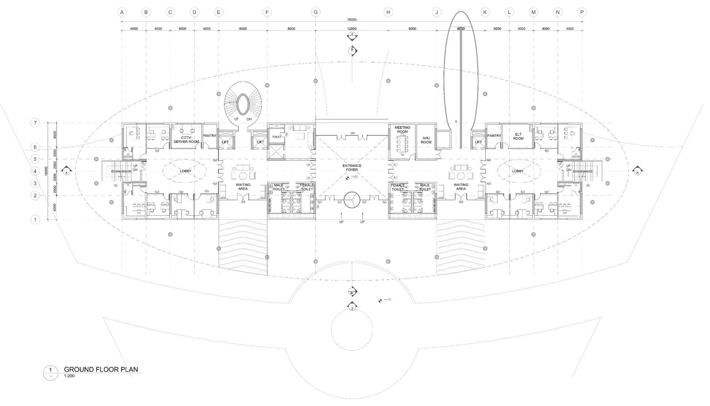
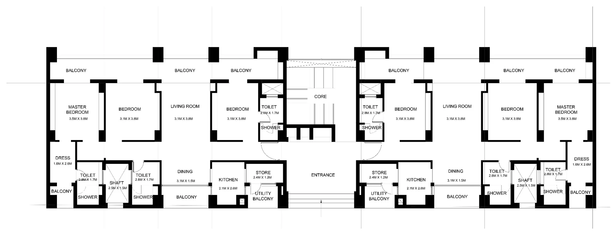

Overview
A civic campus that brings administrative functions beneath a strong shared roof. Public circulation, courtyards and the surrounding landscape give the complex a spatial identity beyond its office programme.
01
The civic campus
The site plan connects administrative buildings, public approaches and associated accommodation across the terrain.

02
A shared roof
A broad roof and colonnade establish a continuous architectural order across the public frontage.


03
Public rooms
Courts and interior gathering spaces punctuate the administrative programme.


04
Planning & accommodation
The building plans and residential studies show the relationship between the civic programme and its supporting campus.


Related